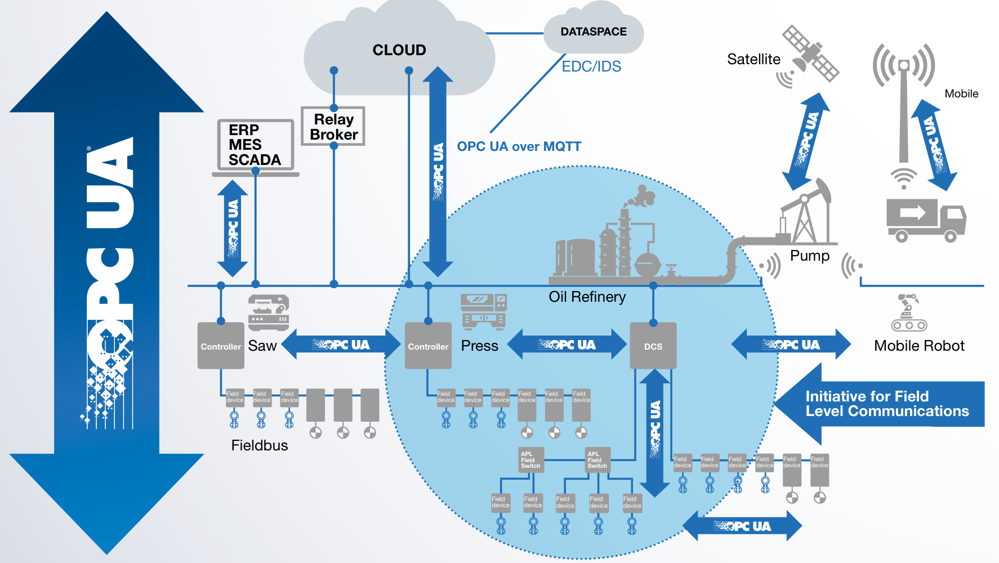
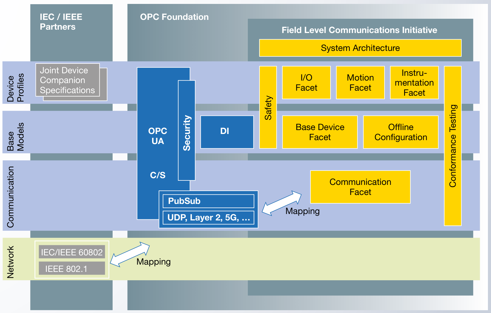

OPC UA FX (Field Level)
ตั้งแต่ปี 2018 OPC Foundation เริ่ม Initiative ให้ OPC UA ลงไปถึง ระดับ Field (เซ็นเซอร์/แอคชูเอเตอร์/Servo Drive) ที่เคยเป็นพื้นที่ของ Fieldbus เก่าๆ อย่าง PROFINET, EtherCAT, CC-Link, EtherNet/IP — และอาจเปลี่ยนหน้าตาของระบบ Automation ในอีก 10 ปี
OPC UA Vision — From Sensor to Cloud
เดิมที OPC UA ใช้ระหว่าง PLC ↔ MES ↔ Cloud — แต่ใต้ PLC ลงไปยังเป็นเขตของ Fieldbus เดิม: Modbus, PROFINET, EtherCAT, CC-Link, IO-Link, HART, …
ในปี 2018 OPC Foundation เปิดตัว Field Level Communications (FLC) Initiative เป้าหมาย: ขยาย OPC UA ลงไปถึงเซ็นเซอร์ตัวเดียว

2 ทิศทางที่ FLC ครอบคลุม:
System Architecture — สถาปัตยกรรมของ OPC UA FX

แนวคิด "Facets"
OPC UA FX แบ่งหน้าที่เป็น Facets — แต่ละ Facet เป็นชุดของ Information Model + ความสามารถ ที่ Application ประเภทหนึ่งใช้:
- Base Device Facet — สิ่งที่ทุก Controller/Device ต้องมี (Interface, State Machine)
- I/O Facet — สำหรับ Sensor/Actuator แบบ Digital/Analog ทั่วไป
- Motion Facet — สำหรับ Servo Drive, Stepper, Linear Actuator (ต้อง Real-time)
- Instrumentation Facet — สำหรับ Process Sensor (Temperature, Pressure, Flow) ใน Process Automation
- Safety — สำหรับ Safety PLC, Safety I/O — มาตรฐาน OPC UA Safety (Part 15)
- Communication Facet — กำหนด Lower-layer Network ที่ใช้
ทำไมต้อง TSN?
OPC UA ปกติใช้ TCP/IP — เร็วพอสำหรับ HMI แต่ ไม่ Deterministic สำหรับ Motion Control:
- ระบบ Motion Control ต้องการ Cycle Time ~1 millisecond หรือเร็วกว่า
- ความผิดพลาดของเวลา (Jitter) ต้อง < 1 microsecond
- TCP/IP ปกติมี Jitter หลาย ms — ไม่ work
TSN (Time-Sensitive Networking) = ส่วนขยายของ Ethernet (IEEE 802.1) ที่:
- ทุก Switch บนเส้นทางทำ Time Synchronization (PTP, IEEE 1588) ระดับ nanosecond
- มี Scheduled Traffic — ข้อความสำคัญมี "Time Slot" ของตัวเอง ไม่ชนกับ Traffic อื่น
- มี Frame Preemption — Frame ของงาน Real-time แทรกหน้า Frame ที่กำลังส่งอยู่
- IEC/IEEE 60802 = TSN Profile สำหรับ Industrial Automation
OPC UA FX over TSN = OPC UA PubSub + UDP + TSN — ทำให้ได้ Deterministic Communication ที่เร็วและ Reliable พอที่จะแทน EtherCAT, PROFINET IRT, CC-Link IE ได้
Members ของ FLC Initiative — ใครอยู่ในนี้
Steering Committee ของ FLC มีผู้ผลิตชั้นนำเกือบทุกค่าย — ทั้งหมดสนับสนุน OPC UA FX:
เกือบทุกผู้ผลิต PLC ที่คุณรู้จัก! รวมทั้ง Mitsubishi Electric ที่ขับเคลื่อน CC-Link IE TSN — Network ใหม่ที่ผสม CC-Link เดิม + TSN + OPC UA
เกี่ยวกับ Mitsubishi FX5U ที่ใช้ใน Lab
มาเชื่อมกลับมาที่บทเรียน PLC ที่คุณเรียน — FX5U กับ OPC UA เป็นยังไง?
FX5-OPC (Intelligent Function Module) แยก ที่ติดข้างซ้ายของ CPU
สรุปทางเลือกของ Mitsubishi:
| PLC Series | OPC UA Support | วิธี |
|---|---|---|
| MELSEC iQ-F FX5U (ตัวที่ใช้ใน Lab) | ⚠️ ผ่านโมดูลเสริม | ติดโมดูล FX5-OPC · ตั้งค่าใน GX Works3 + OPC UA Module Configuration Tool |
| MELSEC iQ-R | ✅ Built-in (option) | ใช้ RD81OPC96 หรือ RnENCPU ที่มี OPC UA ฝังในตัว |
| CC-Link IE TSN | ✅ TSN-ready | Network ใหม่ที่ Mitsubishi ขับเคลื่อน — รองรับ OPC UA FX |
หมายความว่า — Lab ปัจจุบันใช้ FX5U + Modbus เป็นหลัก ถ้าจะอัพเกรดเป็น OPC UA:
- ทางเลือก A — เพิ่มโมดูล
FX5-OPCที่ FX5U ปัจจุบัน เพื่อให้เป็น OPC UA Server - ทางเลือก B — ใช้ OPC UA Gateway ของบุคคลที่สาม (เช่น Kepware, Matrikon) เพื่ออ่าน Modbus จาก FX5U แล้วแปลงเป็น OPC UA
- ทางเลือก C — ใช้ MELSEC iQ-R Series ที่มี OPC UA ในตัว (สำหรับโครงการใหม่)
OPC UA FX vs Fieldbus เดิม
ในยุคปัจจุบัน Fieldbus เดิมยังครองส่วนแบ่งตลาดอยู่ — แต่ OPC UA FX มาเพื่อ เป็นทางเลือกที่ Unified:
| ประเด็น | Fieldbus เดิม | OPC UA FX |
|---|---|---|
| ตัวอย่าง | PROFINET, EtherCAT, CC-Link IE, EtherNet/IP, Modbus | OPC UA FX over TSN |
| เจ้าของ | แต่ละค่าย (Siemens, Beckhoff, Mitsubishi, Rockwell) | OPC Foundation (vendor-neutral) |
| Real-time | ✅ Deterministic | ✅ ผ่าน TSN |
| Security ในตัว | โดยทั่วไป ❌ | ✅ ตามมาตรฐาน OPC UA |
| Semantic Data | โดยทั่วไป ❌ | ✅ Information Model |
| Bridge ไป IT/Cloud | ต้องใช้ Gateway | Native — Protocol เดียวกัน |
| Hardware Support | เยอะมาก (ใช้มา 20+ ปี) | กำลังขยาย |
Safety — Safety PLC ผ่าน OPC UA
OPC UA Part 15 = Safety — ใช้ OPC UA เป็น Safety Communication Channel สำหรับ Safety PLC, Light Curtain, E-Stop, Safety Door
- มี Black Channel Approach — Safety Layer ทำงานอิสระจาก Transport Layer
- มี Sequence Number, CRC, Timestamp — ตามมาตรฐาน IEC 61784-3
- ผ่าน Certification ของ TÜV เพื่อใช้ในงาน Safety Integrity Level (SIL)
เปิดทางให้ Safety + Standard Communication ใช้ Network เดียวกันได้ — เคยต้องแยก Network สอง Layer ตอนนี้รวมกันได้
อนาคต — เกิดอะไรขึ้นต่อ?
OPC UA FX ยังพัฒนาอยู่ ในช่วง 5-10 ปีข้างหน้าน่าจะเห็น:
- Sensor/Actuator ราคาถูก เริ่มมี OPC UA Server ในตัว (เริ่มที่ ~15 kB flash)
- CC-Link IE TSN, PROFINET TSN, EtherCAT TSN — ทุกค่ายเริ่มผสาน TSN เข้า Fieldbus เดิม
- 5G สำหรับ Industrial Wireless — รองรับ OPC UA FX
- Safety PLC ใช้ OPC UA Safety แทน safety-specific bus
- Plug-and-Produce เป็นจริง — ติดเซ็นเซอร์ใหม่ → เห็นใน MES ทันที
สรุปบทที่ 08
- OPC UA Field Level Communications (FLC) Initiative เริ่มปี 2018 — ขยาย OPC UA ลงถึง Field
- มี OPC UA FX (Field eXchange) Specifications ใหม่ — Parts 80-84 + Safety (Part 15)
- สถาปัตยกรรม Facets — Base Device, I/O, Motion, Instrumentation, Safety
- TSN (IEEE 802.1) ทำให้ Ethernet กลายเป็น Deterministic — แทน EtherCAT/PROFINET IRT ได้
- ผู้ผลิตเกือบทุกค่ายอยู่ใน Steering Committee — Mitsubishi รวมอยู่ด้วย
- FX5U ที่ใช้ใน Lab ต้องเพิ่มโมดูล
FX5-OPC— แต่ MELSEC iQ-R มี OPC UA ในตัว - เป้าหมายระยะยาว: Unified Communication ตั้งแต่เซ็นเซอร์ถึง Cloud
บทต่อไป — Cloud Integration ดูภาพรวมของ Reference Architecture ที่ Microsoft, Google Cloud, AWS, SAP ใช้